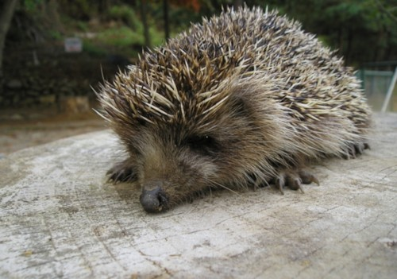

다롱이와 칭구들 -소더기
- 카프리썬
- 서세지
- 소더기
소더기
소더긔이란?
넓은 의미로는 고슴도치목(Order Erinaceomorpha)에 속한 포유류의 총칭이고, 좁게는 국내 서식종인 고슴도치(Amur hedgehog, Erinaceus amurensis)를 가리킨다. 국내 서식종 기준으로 자연 서식지는 러시아 아무르와 연해주, 중국 중앙부에서 동부(남부 해안가와 북부 제외), 만주, 한반도 등지이다. 애완용으로 기르는 종은 우리나라 고슴도치가 아니라 아프리카산의 네발가락고슴도치(Four-toed hedgehog, Atelerix albiventris)와 알제리고슴도치(Algerian hedgehog, A. algirus)의 교배종이다.
